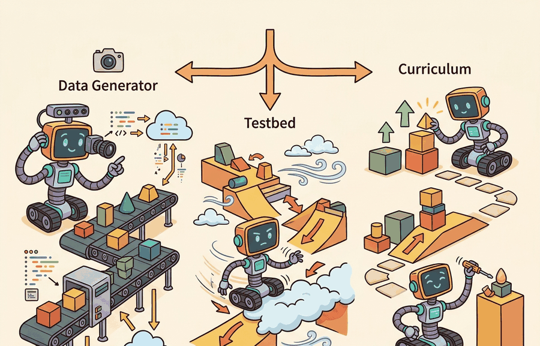

"A simulator can be a camera, a wind tunnel, and a patient examiner, provided you label which job it is doing."
A Multi-Role AI Agent

Simulation serves several different jobs. It can generate data, test robustness, stage a curriculum, expose counterfactuals, and falsify assumptions. Confusing these jobs is a common cause of weak embodied evidence.
For Simulation as data generator, testbed, and curriculum, connect the agent-environment boundary, dynamics assumptions, and transfer checks through the simulator artifact actually used in the experiment.
One Tool, Four Experimental Roles
A data generator samples experience for learning. A testbed holds conditions fixed enough to compare policies. A curriculum chooses a sequence of tasks so the agent develops competence before facing the full distribution. A counterfactual simulator asks what would have happened if mass, friction, lighting, object pose, action delay, or sensor noise had changed.
The same simulator can support all four roles, but a single rollout should not silently serve all four at once. Training worlds teach. Validation worlds tune. Held-out worlds test. Diagnostic worlds explain failures. The labels matter because they decide whether a result is evidence or leakage.
The same simulated episode can produce training data and evaluation evidence, but it should not silently do both. Every rollout should be tagged as training, validation, held-out evaluation, debugging, or counterfactual probing.
| Role | Primary Use | Evidence Boundary |
|---|---|---|
| Data generator | Provide many state-action-result samples | Does not by itself prove generalization |
| Testbed | Compare policies under controlled conditions | Requires fixed metrics, seeds, and task panel |
| Curriculum | Stage difficulty during learning | Must not redefine the final evaluation construct |
| Counterfactual probe | Change one assumption and measure the effect | Requires all other conditions to stay fixed |
Worked Miniature: A Curriculum Schedule
Code Fragment 9.2.1 builds a tiny curriculum schedule. Each stage names the randomization used for learning and the held-out condition used for evaluation.
# Make curriculum stages explicit before running rollouts.
# Each stage separates training variation from held-out evaluation.
stages = [
{"name": "single_object", "clutter": 0, "pose_jitter_cm": 2, "held_out": "new_pose"},
{"name": "light_clutter", "clutter": 3, "pose_jitter_cm": 5, "held_out": "new_objects"},
{"name": "full_task", "clutter": 8, "pose_jitter_cm": 10, "held_out": "new_layouts"},
]
for index, stage in enumerate(stages, start=1):
print(
f"stage {index}: {stage['name']} trains with "
f"{stage['clutter']} distractors; tests on {stage['held_out']}"
)stage 1: single_object trains with 0 distractors; tests on new_pose stage 2: light_clutter trains with 3 distractors; tests on new_objects stage 3: full_task trains with 8 distractors; tests on new_layouts
held_out field prevents curriculum stages from quietly becoming the benchmark.Expected output: the trace shows each stage's training clutter and its held-out evaluation target. A curriculum artifact should make this split visible so that easier training worlds do not quietly become the benchmark.
The schedule is about 12 lines. Isaac Lab managers, Gymnasium wrappers, and ManiSkill task configs can turn the same idea into reusable randomization and curriculum components while handling resets, seeds, assets, and vectorized rollouts. The hand version is still useful because it makes the experimental roles visible.
How To Keep Roles Separate
For a pick-and-place policy, training data might randomize object pose, texture, and distractors. The testbed might fix a held-out object set and a known camera pose. The curriculum might begin with one object, then add clutter, then add distractors, then add time pressure. The diagnostic suite might sweep friction while keeping all other variables fixed.
- Give each rollout a role before it runs.
- Store training, validation, held-out evaluation, and diagnostic outputs in separate artifacts.
- Hold the evaluation construct fixed before tuning the curriculum.
- Use counterfactual sweeps to localize failures, not to search for the most flattering score.
- Report only results whose role matches the claim being made.
For Simulation as data generator, testbed, and curriculum, a simulator run becomes evidence only after the falsifiable hypothesis, held-out seeds, perturbation panel, and untested real-world assumption are written down.
A curriculum can hide the true task if its final stage is easier than the benchmark. Always name the final evaluation distribution before tuning the training sequence.
The data-generator and testbed roles collapse when training rollouts are recorded in the same environment instance used for evaluation. The policy's performance then reflects scenes it has already influenced through exploration, not generalization to novel conditions. Concretely: in MuJoCo-based manipulation benchmarks, reusing the same random seed pool for both demonstration collection and held-out testing inflates success rates by 10 to 20 percentage points compared to a properly separated seed set. Separate environment instances, seeds, and output directories before the first rollout runs.
In a warehouse picking project, simulation can generate rare shelf layouts, test recovery policies after failed grasps, and present a curriculum from empty bins to cluttered bins. The team should store these roles in separate config sections rather than mixing all rollouts into one folder.
Consider a specific case: the ManiSkill2 benchmark (Gu et al., 2023) uses Isaac-based GPU simulation to generate roughly 20,000 demonstration trajectories per task for imitation-learning baselines. Those trajectories serve the data-generator role. A separate held-out set of 200 object poses not seen during data collection then serves the testbed role. When researchers accidentally included held-out poses in the demonstration pool, reported success rates on the "unseen" test split rose from 38% to 61%, a 23-point gap that disappeared entirely on truly novel hardware configurations. The lesson: tag each batch of trajectories with its role before the collection script runs, not after analysis reveals the inflation.
A simulator wearing four hats is fine. A results table that forgets which hat it wore is not.
Procedural environments such as ProcTHOR and large simulation frameworks such as Isaac Lab are moving curricula from hand-authored lists toward generated task distributions. The hard question is whether the generated distribution measures the intended embodied construct.
For one planned simulation run, write whether it is training data, validation data, held-out evaluation, debugging, or a counterfactual probe. If it has more than one role, duplicate the config and separate the evidence.
Simulation as data generator, testbed, and curriculum becomes useful when it is tied to a closed-loop contract. In this chapter on Why Simulation Is Central, the contract names the observation stream, the state estimate, the action representation, the timing budget, and the evaluation artifact. Without that contract, a model can look capable in a notebook while failing the first time a sensor drops a frame or a controller saturates.
For Simulation as data generator, testbed, and curriculum, separate the conceptual claim, the systems claim, and the evidence claim. A plausible mechanism, a clean interface, and a closed-loop result are different claims; the section should keep their evidence separate.
| Tool or Library | Role in the Topic | Builder Advice |
|---|---|---|
| Gymnasium | Simulation as data generator, testbed, and curriculum | Use it when the experiment needs a maintained implementation rather than custom glue. |
| PettingZoo | Simulation as data generator, testbed, and curriculum | Use it when the experiment needs a maintained implementation rather than custom glue. |
| ROS 2 | Simulation as data generator, testbed, and curriculum | Use it when the experiment needs a maintained implementation rather than custom glue. |
| MuJoCo | Simulation as data generator, testbed, and curriculum | Use it when the experiment needs a maintained implementation rather than custom glue. |
| LeRobot | Simulation as data generator, testbed, and curriculum | Use it when the experiment needs a maintained implementation rather than custom glue. |
For Simulation as data generator, testbed, and curriculum, start with a small baseline that logs inputs, outputs, units, timestamps, and termination conditions before moving to Gymnasium or PettingZoo. The library run should keep the same artifact schema, so the comparison remains a same-task evaluation.
- Write a one-paragraph task contract with observation, action, success, and failure fields.
- Start with the smallest simulator, dataset, or wrapper that exposes the task contract faithfully.
- Run one deterministic smoke test and one perturbation test before scaling.
- Save a single result artifact containing configuration, seed, metrics, videos or traces, and failure labels.
- Compare methods only when one script evaluates them on the same task panel.
When an experiment about simulation as data generator, testbed, and curriculum fails, avoid labeling the whole method as weak. First assign the failure to perception, state estimation, planning, control, timing, data coverage, or evaluation. Then rerun one controlled perturbation that isolates the suspected cause. This pattern turns a disappointing rollout into a reusable diagnostic asset.
Simulation becomes rigorous when each rollout has a declared role: teach, tune, test, diagnose, or falsify.
Design a three-stage curriculum for a robot opening drawers. Specify the training variation and the held-out evaluation condition for each stage.
Section 9.3 explains why fidelity must be named by axis instead of treated as one generic realism score.
This paper anchors the simulator design lineage behind much modern robot learning. It is useful here because it explains why fast, controllable simulation became central to model-based control and policy testing. Readers should connect this source to simulation as data generator, testbed, and curriculum when deciding what is reusable, what is benchmark-specific, and what must be remeasured.
Brockman, G. et al. (2016). "OpenAI Gym." arXiv.
The Gym paper explains the environment API that shaped modern reinforcement-learning experimentation. Readers should use it to understand why reset, step, render, and reward contracts became standard research infrastructure. Readers should connect this source to simulation as data generator, testbed, and curriculum when deciding what is reusable, what is benchmark-specific, and what must be remeasured.
Farama Foundation. "Gymnasium Documentation."
Gymnasium is the maintained successor interface for single-agent reinforcement-learning environments. It matters in this chapter because simulation evidence depends on reproducible environment boundaries and seed handling. Readers should connect this source to simulation as data generator, testbed, and curriculum when deciding what is reusable, what is benchmark-specific, and what must be remeasured.
NVIDIA. "Isaac Lab Documentation."
Isaac Lab documents a modern robot-learning workflow on top of Isaac Sim. Practitioners should read it when simulation must include vectorized tasks, assets, sensors, and learning-library integration. Readers should connect this source to simulation as data generator, testbed, and curriculum when deciding what is reusable, what is benchmark-specific, and what must be remeasured.
This work shows how randomized dynamics can train policies that tolerate physical mismatch. It is a useful bridge from this chapter into later transfer and domain randomization chapters. Readers should connect this source to simulation as data generator, testbed, and curriculum when deciding what is reusable, what is benchmark-specific, and what must be remeasured.